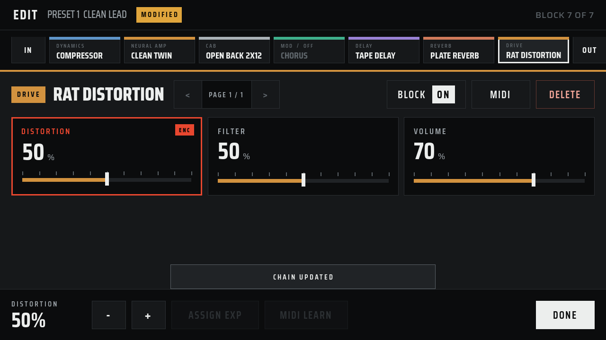

Play the whole rig from four footswitches.
Ardor runs NAM amp captures, cabinet IRs, and 48 built-in effects on a Raspberry Pi. The source is open.


Hear it first.
One guitar take, recorded dry. Switch to the Ardor output while it plays.
Confirm: preset name and recording chain for this clipRead it from standing height.
The live preset fills with red. Everything else stays dark and quiet. The four tiles match the four footswitches.



Build the chain from left to right.
Add drive, amp, cabinet, and effect blocks in the order you want. Split into two lanes for a stereo rig.

48 effects in five families.
Each family has one color, on the pedal and in the manager.
Drive
3RAT Distortion, Big Cheese Fuzz, Tape Machine
Dynamics + tone
6Compressor, Noise Gate, Transient Shaper, 5-Band EQ, Stereo Widener, GCB-95 Wah
Modulation
16Chorus, Flanger, Rotary, Vibe, Phaser, Vintage Trem, Poly Octave, Pattern Trem, Auto Swell, Filter, Ladder Sweep, Formant, Quadrature, Destroyer, Whammy, Harmonizer
Delay
10Digital, Tape, Dual, Filter, Lo-fi, Bucket Brigade, Duck, Pattern, Swell, Tremolo
Reverb
13Convolution, Room, Hall, Plate, Spring, Bloom, Cloud, Shimmer, Chorale, Nonlinear, Swell, Magneto, Reflections
Use the tones you already own.
Load Neural Amp Modeler captures and cabinet IRs in the browser manager. Ardor includes no third-party captures.
.nam captures
Use the full model or its embedded nano model. Choose the input: sum, left, or right.
Cabinet IRs
Partitioned convolution, with level and dry/wet mix.
Every layer is open.
The DSP engine, the touch UI, the preset format, the enclosure files, and the firmware image are MIT-licensed. Build it, change it, and send your changes back.
├─ src/ realtime engine, touch UI
├─ apps/manager/ browser manager
├─ buildroot/ firmware image
├─ hardware/ KiCad boards
├─ 3d_files/ enclosure
└─ docs/ build and assembly guides